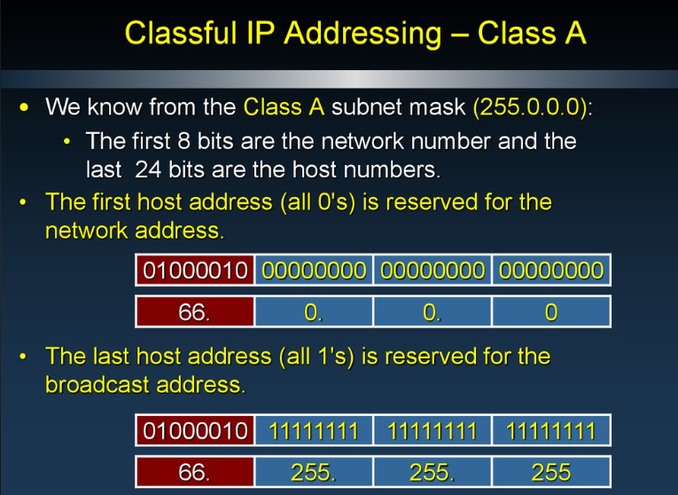
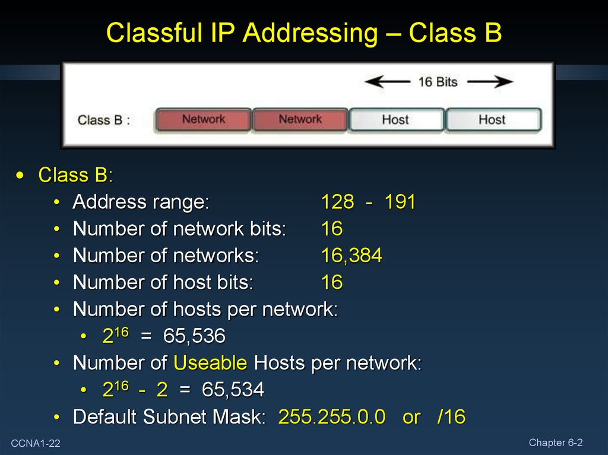
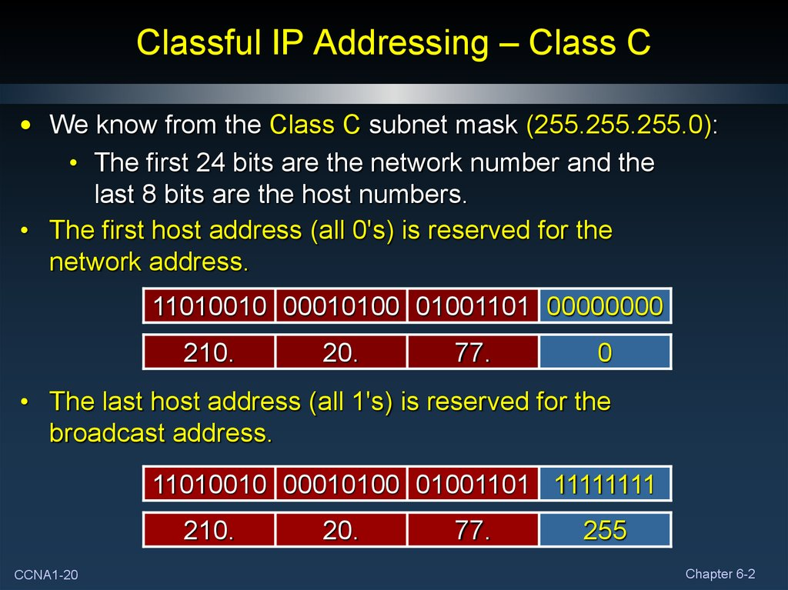
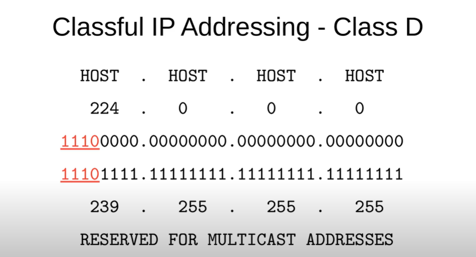
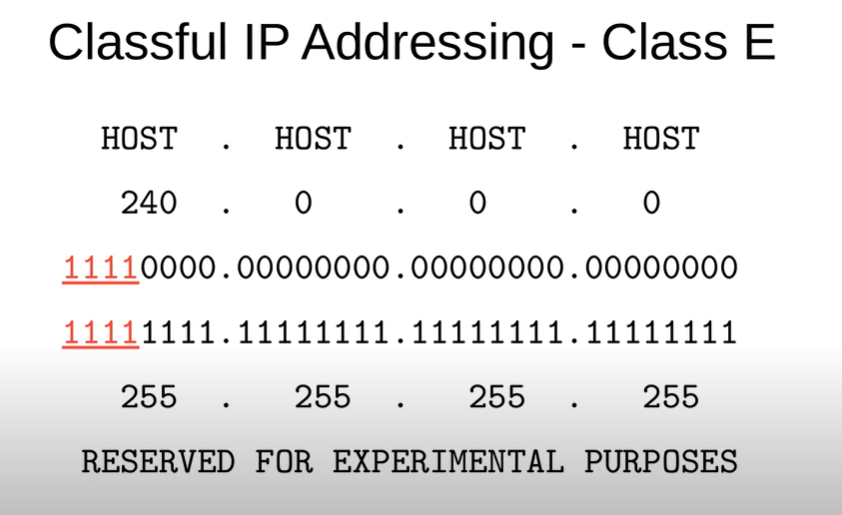

Classful Addressing
In classful addressing, IPv4 addresses are divided into five classes: A, B, C, D, and E.
- Class A: Supports large networks with few network segments. IP addresses start with a number from 1 to 126 in the first octet.
- Class B: Suitable for medium-sized networks. IP addresses start with a number from 128 to 191 in the first octet.
- Class C: Ideal for small networks. IP addresses start with a number from 192 to 223 in the first octet.
- Class D: Reserved for multicast addresses. IP addresses start with a number from 224 to 239 in the first octet.
- Class E: Reserved for experimental purposes. IP addresses start with a number from 240 to 255 in the first octet.





Classless Addressing
In classless addressing, IP addresses are not restricted to specific classes.
- Allows for more flexible allocation of IP addresses.
- Utilizes Variable Length Subnet Masking (VLSM) and Classless Inter-Domain Routing (CIDR).
- Divides the IP address space into smaller subnets, resulting in efficient utilization of address space.
- Reduces the size of routing tables and simplifies routing.
- Helps overcome the limitations of classful addressing and IPv4 address exhaustion.
- Enables efficient utilization of the IP address space by allowing for custom-sized subnets.
- Facilitates easier allocation of IP addresses to networks of various sizes.
- Reduces address wastage by allowing for finer control over subnet sizes.
- Enables more efficient routing by reducing the size of routing tables and improving the scalability of the internet.
- Supports hierarchical network design, allowing for better organization and management of network resources.
Variable Length Subnet Masking (VLSM)
- Allows for more efficient use of IP addresses by assigning smaller subnets to areas with fewer hosts and larger subnets to areas with more hosts.
- Reduces IP address wastage by tailoring the subnet mask to the specific number of hosts required in each subnet.
- Enables the design of a hierarchical network structure that optimizes the use of available IP addresses.

Classless Inter-Domain Routing (CIDR)
- Eliminates the concept of address classes (Class A, B, and C) and allows for more flexible allocation of IP addresses.
- CIDR notation represents an IP address followed by a slash and a number, indicating the number of bits used for the network portion of the address (e.g., 192.168.1.0/24).
- Allows for the aggregation of IP addresses into a single routing table entry, reducing the size of routing tables and the overhead associated with routing protocols.
- Plays a crucial role in delaying the exhaustion of IPv4 addresses by efficiently utilizing the available address space.
Benefits of Classless Addressing
- Facilitates more efficient use of IP addresses by allowing for variable-length subnet masks.
- Reduces the size of routing tables and improves the scalability of the internet.
- Enables more flexible and hierarchical network designs.
- Helps delay IPv4 address exhaustion by optimizing address allocation.
Comparison with Classful Addressing
| Aspect | Classful Addressing | Classless Addressing |
|---|---|---|
| Subnetting | Fixed subnet sizes based on address classes (A, B, and C). | Variable Length Subnet Masking (VLSM) allows for custom subnet sizes. |
| Address Allocation | Addresses are allocated in predefined blocks based on address classes. | Addresses are allocated more efficiently, reducing address wastage. |
| Routing | Routing tables are larger due to fixed-size subnetting and class-based addressing. | Routing tables are smaller and more efficient due to variable-length subnet masking and CIDR. |
| Scalability | Less scalable due to inefficient use of IP address space. | More scalable due to efficient address allocation and reduced routing table size. |
| Flexibility | Less flexible in terms of address allocation and subnetting. | More flexible, allowing for custom subnet sizes and efficient address allocation. |
| Wastage | May lead to address wastage due to fixed-size subnetting. | Minimizes address wastage by allowing for variable-length subnet masks. |
| Address Space Utilization | Less efficient utilization of IP address space. | More efficient utilization of IP address space. |